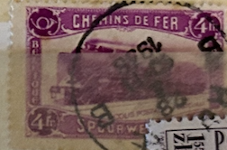
| SOURCE | TITLE| IMAGE MATCH | click to source page |
| Alamy | BELGIUM - CIRCA 1933: a stamp printed in the Belgium shows Central Post Office, Brussels, circa 1933 Stock Photo - Alamy | 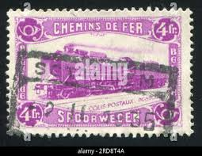 |
| eBay UK | Used Belgian and Colonies Parcel Post Stamps for sale | eBay UK | 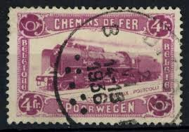 |
| Alamy | Mail railway hi-res stock photography and images - Page 32 - Alamy | 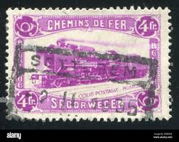 |
| HipStamp | Belgium #Q182 Railway Stamps Used | Europe - Belgium & Colonies, Parcel Post Stamp / HipStamp | 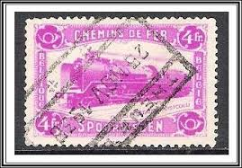 |
| HipStamp | Belgium Parcel Post Scott Q182 Used 1934 | Europe - Belgium & Colonies, Parcel Post Stamp / HipStamp | 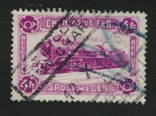 |
| eBay | France Scott # 129 - Used | eBay | 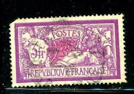 |
| eBay | French Used Postage Due Stamps for sale | eBay | 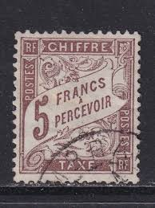 |
| Thank you for the add Looking for any information please The stamps are 33 and TCHECO SLOVAQUAN not sure of spelling of last few letters | 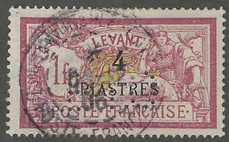 | |
| Find Your Stamps Value | Value of rf 2f postes stamps | 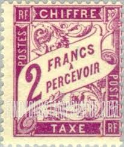 |
| eBay | FRANCE J44 - Numeral of Value "1926 Bright Violet" (pf29979) | eBay | 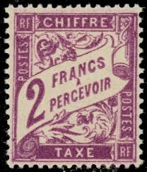 |
| Stamp Auction | Daniel F. Kelleher Auctions, LLC Sale - 737 Page 91 | 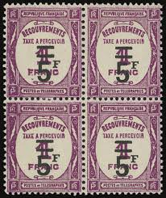 |
| CGB Numismatics | 25 Centimes FRANCE regionalism and miscellaneous 1918 JP.135.03 535099 Banknotes | 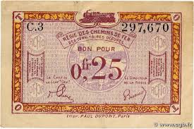 |
| eBay | 1923 Year Banknote French Paper Money for sale | eBay | 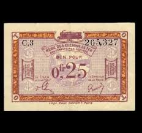 |
| eBay | Fiscal Stamp - Hunting Permit - Type Tasset N°83 Used | eBay | 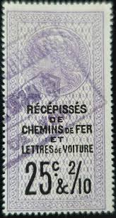 |
| eBay | Alexandria #YTTT08 Mint 1928-1930 Duval Postage Dues [J8] | eBay | 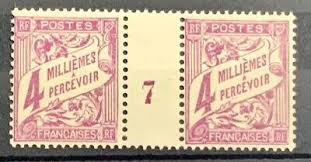 |
| eBay | Ivory Coast, Scott Q33 (Yvert CP15), used block, signed Miro | eBay | 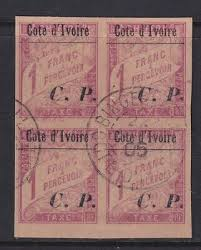 |
| eBay | FRANCE FRENCH COLONIES 1884-85 POSTAGE DUE Sc J14 Yv TT17 TOP VALUE UNUSED €130 | eBay | 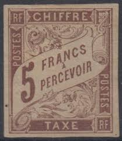 |
| eBay | Social Postal Stamps - Social Security - Retirements No.49 used | eBay | 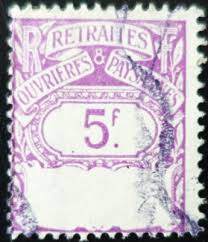 |
| eBay | Middle Congo #YTTT11 Used 1928 Duval Postage Dues [J11] | eBay | 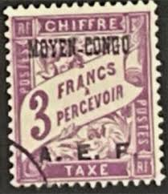 |
| Find Your Stamps Value | Value of monaco timbre taxe 2f stamps | 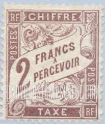 |
| eBay | French Red Individual Stamps for sale | eBay | 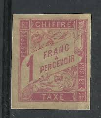 |
| eBay | F-EX44743 FRANCE MH 1927 3fr MERSON UNUSED Yv.240. 60€. | eBay | 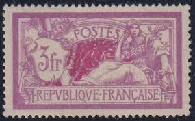 |
| Find Your Stamps Value | Value of 1f 50 france stamps | 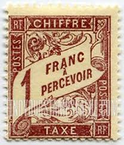 |
| eBay | FRANCe # 132 Average Used Issue - LIBERTY AND PEACE - S5642 | eBay | 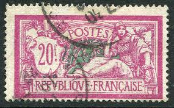 |
| HipStamp | France 129 Used 1927 issue (an1190) | Europe - France & Colonies, General Issue Stamp / HipStamp | 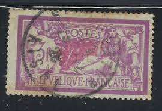 |
| HipStamp | Stamps Are Friends / HipStamp | 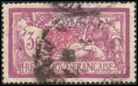 |
| numis'collection | Banknote France R.3 0.25 Franc, Franco-Belgian Railways - 1923 | 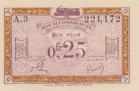 |
| eBay | FRANCE, 1927 Merson, 3f. Deep Mauve & Carmine, used. | eBay | 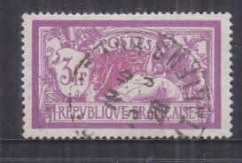 |
| Greysheet | Régie des Chemins de Fer des Territoires Occupés 0.25 franc B1103a,FranceProof (PR)3 No date Sig 1 Colon/Bréaud Series A D 6 digit s/n Intro 01 11 1923 Pricing Guide | The Greysheet | 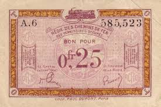 |
| Colnect | Stamp: Tanger (Tangier, French Post Office(Tanger 1918) Mi:MA-TG P9,Sn:FR-MA J43,Yt:MA T43,Sg:FR-TG D27 📮 | 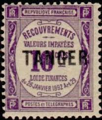 |
| eBay | FRANCE J27 - Numeral of Value "1884 Postage Due" (pf29978) $130 | eBay | 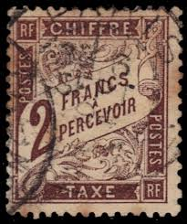 |
| eBay | French Tunisian Postage Due Stamps for sale | eBay | 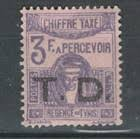 |
| eBay | FRANCE FRENCH SC #128 1925 OLD VINTAGE POSTALLY USED 3FR DEFINITIVE SINGLE STAMP | eBay | 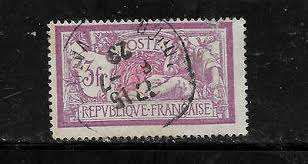 |
| eBay | France, Scott J38, Postage Due, 1893-1941, used | eBay | 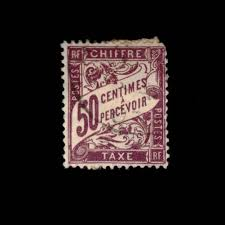 |
| eBay | Stamp France Obliterated No. 2524 Philexfrance 89 | eBay | 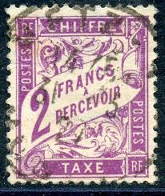 |
| eBay | Signed Calves - General Colonies Stamp Tax No.17 Mint * MH | eBay | 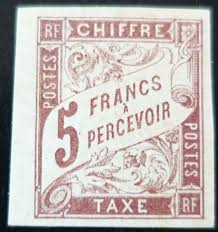 |
| Find Your Stamps Value | Value of belgie-belgique 50f stamps | 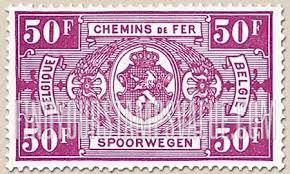 |
| eBay | France Scott # 129 Fine Used 1927 3 Franc Liberty & Peace Violet and Rose | eBay | 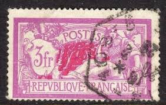 |
| eBay | Andorra, French Administration Scott #J19 VF Unused 1941 2 F Postage Due | eBay | 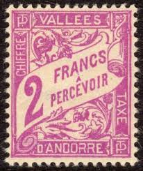 |
| eBay | France Stamp Tax N°32 Millésime 3 Mint | eBay | 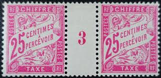 |
| eBay | Belgium - 1938 - Parcel Post Overprint on Unpublished Stamp #1- 6/5.50Fr - #1965 | eBay | 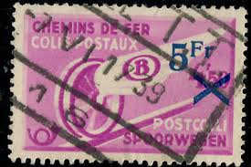 |
| eBay | France 1927-31 Type Merson Perf. 14x13 1/2 Typo 3f Used A18P15F283 | eBay | 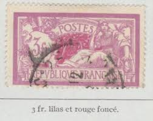 |
| eBay | New Caledonia 1933 - Used stamps. Yvert PA Nr.: 27. Block of 6.....(EB) MV-13595 | eBay | 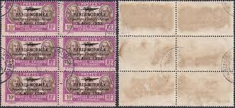 |
| eBay | France 1927-31 Type Merson Perf. 14x13 1/2 Typo 3f Used A18P15F282 | eBay | 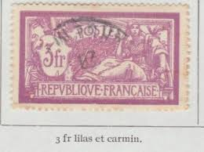 |
| eBay UK | French Postage Due Stamps for sale | eBay UK | 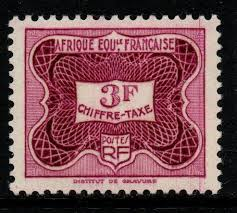 |
| eBay | 1925 FRANCE 3f Sg. 430 OLD USED STAMP | eBay | 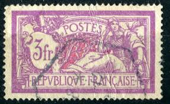 |
| eBay | France Stamp For Small Postal Packages No. 17 Used | eBay | 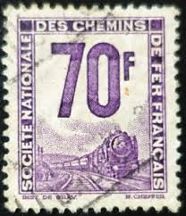 |
| lastdodo.com | Delrieu [Paris] Stamp catalogue - LastDodo | 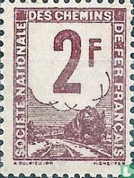 |
| eBay | France 1927 #129 Liberty and Peace - Used | eBay | 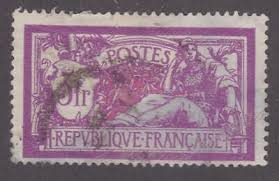 |
| eBay | Allegory of Liberty & Peace 1900 France Old Used Stamp Face Value: 3 Francs | eBay | |
| eBay | Superb And Signed Calves - Tax Stamp No. 39 Mint * MH | eBay | |
| Todocolección | sellos belgica - Buy Antique stamps of Belgium on todocoleccion | |
| eBay | Belgian Pink Belgian & Colonies Stamps for sale | eBay | |
| eBay | France Scott 129 (1927) Used F C | eBay | |
| eBay | France Colony Tunisia Stamp Tax N°34 Mint ** Luxe MNH | eBay | |
| eBay | France #J40 Very Fine Mint Block - Bottom Stamps Never Hinged Top Stamps Hinged | eBay | |
| eBay | Lightly Hinged Andorran Stamps for sale | eBay | |
| HipStamp | France, Scott 129 (Yvert 240), MNH | Europe - France & Colonies, General Issue Stamp / HipStamp | |
| eBay | MOMEN: FRENCH COLONIES IN TAHITI SC #J13 IMPERF DUE 1893 UNUSED LOT #65058 | eBay | |
| stampphenom.com | Belgium 1923-1931 State Arms - Railway Stamps – StampPhenom |